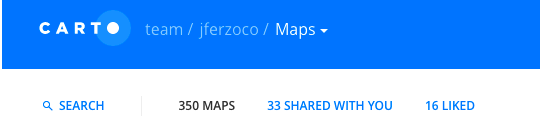
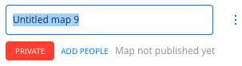
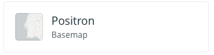
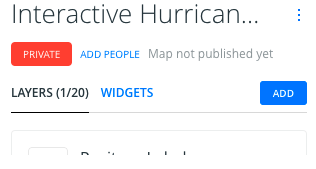
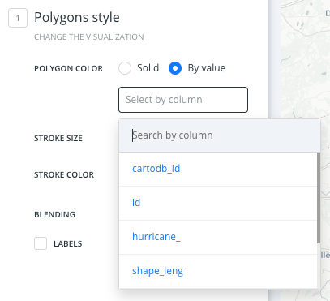
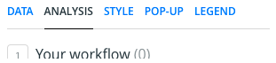
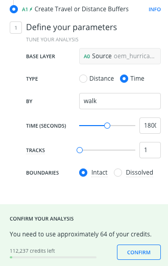
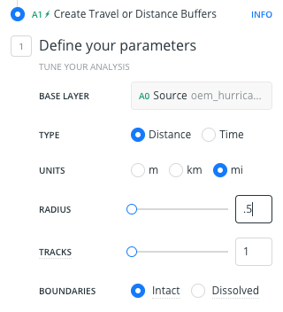
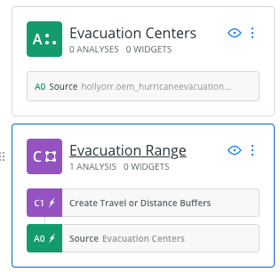

This is a lesson in how to make an interactive hurricane map in CARTO
Final product of this lesson will look like this

Create a New map
Create Empty Map You will see a basic map with no data on it and a layer card with a warning symbol, telling you there is no geometry (no shapes, points or lines on the map)
Interactive Hurricane Map
Open up the basemaps sidebar by clicking the current basemap
Select Positron (labels below) as the new basemap.

Download button on interfaceAdd button on top of layer sidebar
Connect Dataset tabAdd LayerHurricane ZonesCenter map on layerFill bar and select the right-hand By Value setting, then select the value (column) hurricane_
Once you select that, it will assign colors to your hurricane zones.
Replace the code there with this:
#layer {polygon-fill: ramp([hurricane_], (#bababa, #dc7e5e, #e39d5d, #e9e066, #bed066, #98c576, #52A696), ("0", "1", "2", "3", "4", "5", "6"), "=");
polygon-opacity:1;
line-width: 0;
line-color: #FFF;
line-opacity: 1;
}Download button on interfaceAdd button on top of layer sidebarConnect Dataset tabAdd LayerEvacuation CentersPOINT SIZE and change it to 19.5STROKE SIZE and change it to 5Click on Evacuation Centers layer name or layer letter
Go to Analysis tab

Add AnalysisCreate Travel/Distance BuffersAdd AnalysisOption 1 (credits used)

Option 2 (credits not used)

Press return. Analysis will run, generating a 20-minute walk (Option 1) or a 5 mile circle around each center (Option 2).
Evacuation Centers LayerA1 module in the layer cardC1 into its own layerEvacuation Range
Fill and set the opacity to .07 towards the bottom, either by changing the number or using the slider. 1Download button on interface.gpkg as formatAdd button on top of layer sidebarConnect Dataset tabAdd LayerThere you will see the underlying code to edit the current colors to the hurricane colors
Replace the code there with this:
#layer {polygon-fill: ramp([zone], (#bababa, #dc7e5e, #e39d5d, #e9e066, #bed066, #98c576, #52A696), ("0", "1", "2", "3", "4", "5", "6"), "=");
polygon-opacity:1;
line-width: 0;
line-color: #FFF;
line-opacity: 1;
}Find where {{bin_id}} is located, replace that H4 block (line 9, probably) with this code:
<h4 class="CDB-infowindow-title"><a href="http://a810-bisweb.nyc.gov/bisweb/PropertyProfileOverviewServlet?bin={{bin_id}}" target=blank_</a>{{bin_id}}</h4>Click on a building and activate BIN link
Add WidgetYou'll see four tabs, Category, Histogram, Formula and time series
Check the following boxes:
point count or polygon countOn all:
Custom color at bottomzonezone_idOpen SQL pane at bottom
Update greenpoint_buildings SET zone_id = hurricane_ from hurricane_zones WHERE ST_Intersects(hurricane_zones.the_geom, greenpoint_buildings.the_geom)This is the base code for that:
Update {table} SET {new_column} = {source_column) from {source_table} WHERE ST_Intersects(source_table.the_geom, main_table.the_geom)